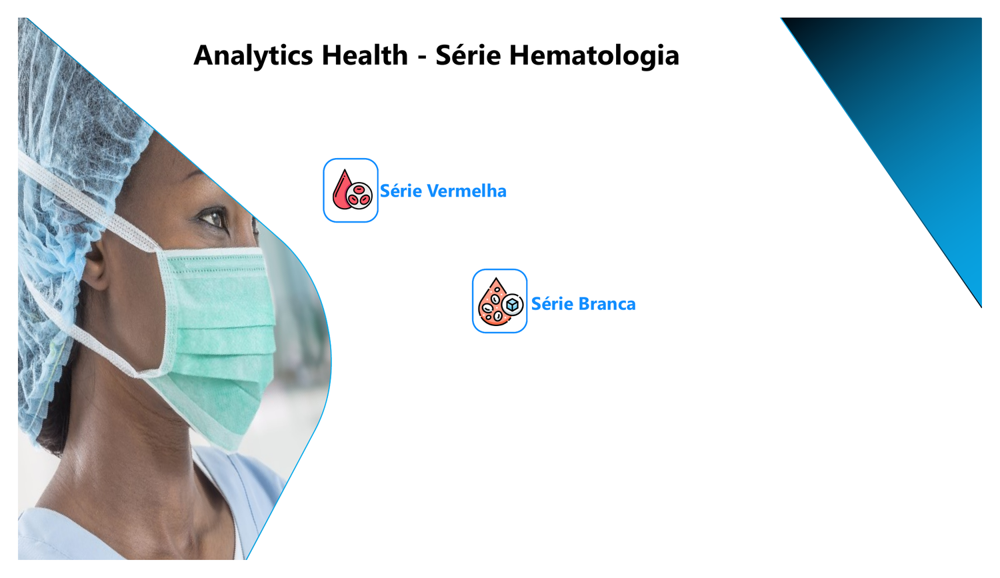
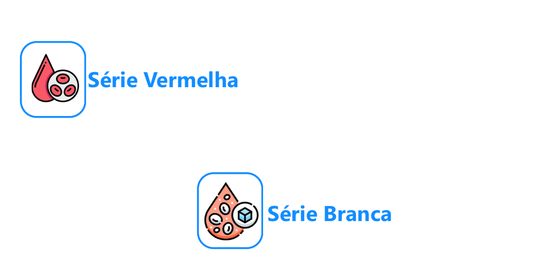
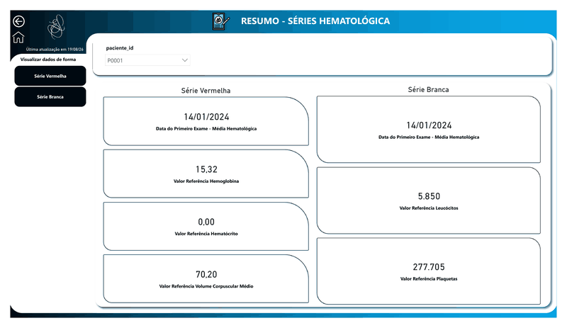

Analytics
Health
Serie
Hematologia.
Case demonstrativo de analytics aplicado a exames hematologicos, construido para apresentar ingestao, modelagem dimensional, analise temporal e indicadores em uma arquitetura moderna com Microsoft Fabric e Power BI.

Uma experiencia para leitura clinica e operacional.

O produto organiza a analise em duas frentes: serie vermelha, para indicadores como hemoglobina, hematocrito, hemacias e VCM; e serie branca, para acompanhar leucocitos e plaquetas ao longo do tempo.
A pagina publica usa apenas recortes sanitizados da capa do PDF. As telas com tabelas, IDs de pacientes e valores linha a linha foram revisadas e ficaram fora da publicacao.
Fluxo visual entre abas.

Problema e objetivo.
O objetivo do case e simular uma solucao analitica para acompanhar volume de exames, distribuicao por unidade, comportamento temporal, classificacao por faixa de referencia e tendencias de resultados hematologicos.
O material publico preserva apenas a narrativa tecnica, a arquitetura e as decisoes de modelagem. Arquivos PBIX/PBIT, fontes corporativas e bases brutas nao fazem parte deste repositorio.
Do dado sintetico ao modelo semantico.
Dimensoes e indicadores.
A modelagem proposta separa resultados de exames em uma tabela fato e dimensoes de calendario, exame, unidade e paciente sintetico. Essa estrutura permite analises por periodo, exame, unidade, faixa de referencia e finalidade.
Indicadores previstos: volume de exames, resultados dentro/fora da referencia, distribuicao por unidade, evolucao mensal, exames por finalidade e comparacoes temporais.